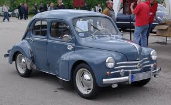
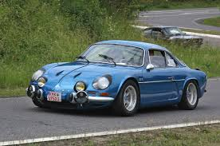
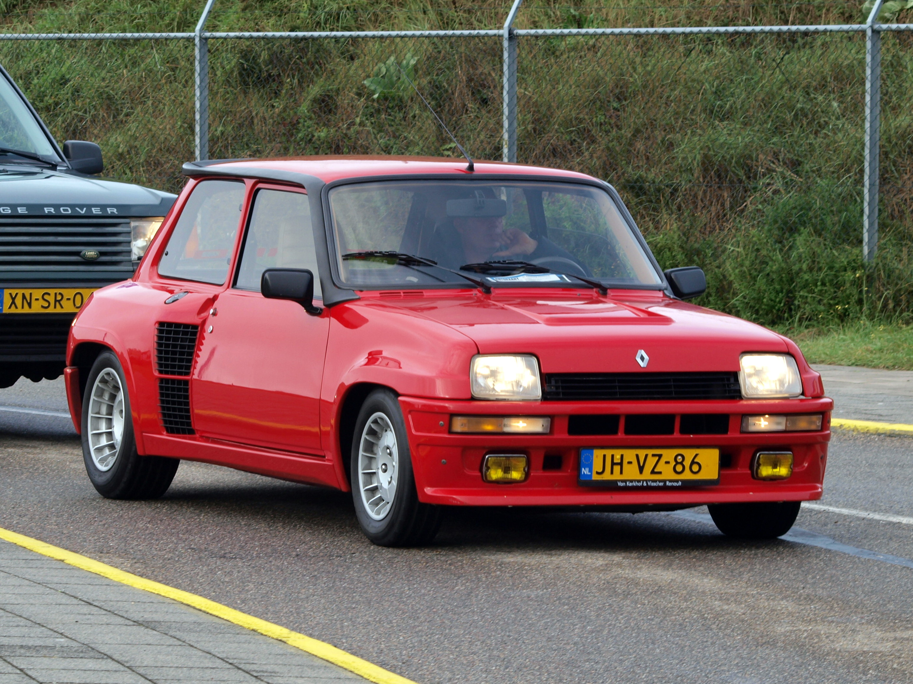
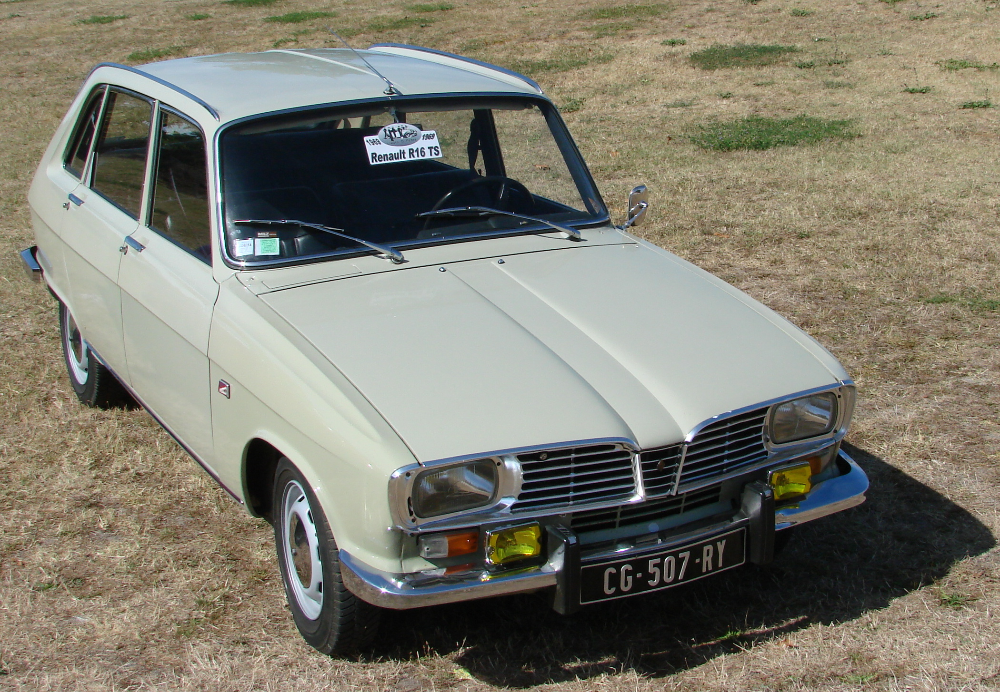
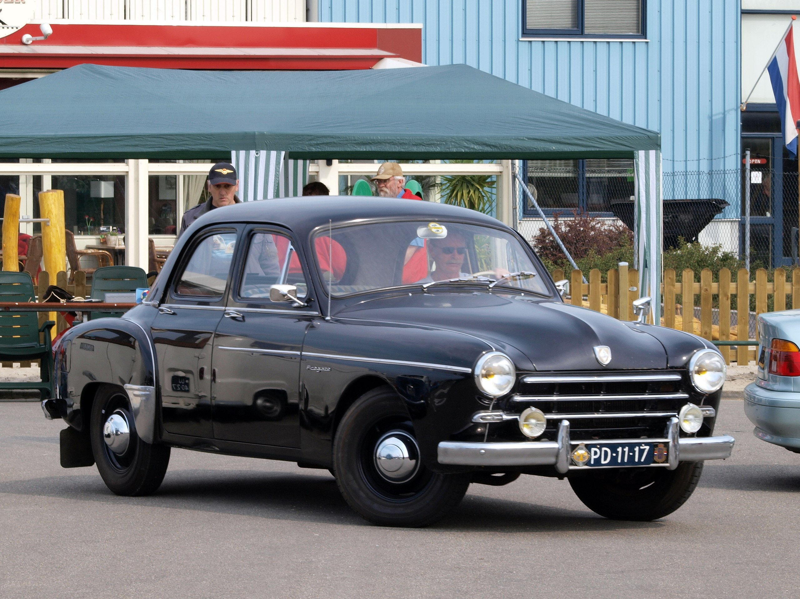

Modell: Renault 4CV
Baujahr: 1947-1961
Produktionsstückzahl: 1.100.000+
Motor: 4-Zylinder, 0.7L
Leistung: 17 PS
Höchstgeschwindigkeit: 110 km/h

Modell: Renault Alpine A110
Baujahr: 1955-1977
Produktionsstückzahl: 7.000+
Motor: 4-Zylinder, 1.3L bis 1.6L
Leistung: 95 PS bis 138 PS
Höchstgeschwindigkeit: 190 km/h

Modell: Renault R5 Turbo
Baujahr: 1980-1985
Produktionsstückzahl: 1.600
Motor: 4-Zylinder, 1.4L Turbo
Leistung: 160 PS
Höchstgeschwindigkeit: 200 km/h

Modell: Renault 16
Baujahr: 1965-1980
Produktionsstückzahl: 1.850.000+
Motor: 4-Zylinder, 1.3L bis 1.6L
Leistung: 55 PS bis 82 PS
Höchstgeschwindigkeit: 160 km/h

Modell: Renault Fregate
Baujahr: 1951-1960
Produktionsstückzahl: 100.000+
Motor: 4-Zylinder, 2.0L
Leistung: 72 PS
Höchstgeschwindigkeit: 140 km/h